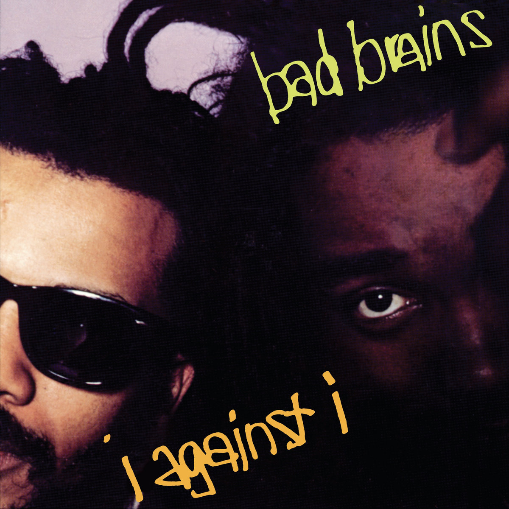

31 Days of Punk
The punk album for 12/17/2025 is:
I Against I
by Bad Brains
Ben's thoughts
In the early days of hardcore music, the thirst for a changing sound required many bands to innovate and what had become a classic tone for the genre. In flies: Bad Brains.
Bad Brains falls into the category of Afro-punk, which blends the heavy styles of punk music with traditional reggae. While punk was very accessible by the early 80s, it was to a predominantly white audience. And in that aforementioned innovative spirit, black-led punk bands began to sprout up, bringing new ideas and fusing multiple different genres. Bad Brains is a product of this punk renaissance, blending reggae with hardcore punk stylings.
Their 1986 album “I Against I” was a cultural genesis point. Within it you hear remnants of thrash-metal, horror-punk, Synth wave, and Ska. This collection of playing styles and forges a completely unique sound within this band. And the legacy tied to it has only grown stronger with time. The instrumentals alone are wildly impressive, and incredibly telling of the changing role of guitar in rock & roll at the time. Songs like “She’s Calling You” are reflective of the popular sound in punk (See: Billy Idol). The album has me truly itching for more, and frontman Paul Hudson’s vocals breathe with emotion. Whines, whispers, cackles and rhymes make up just a fraction of this singer's repertoire. The album tackles themes of solidarity and isolation, as well as cultural degradation and violence. The title I Against I derives from the peaceful rastafarian phrase “I and I.” Bad Brains is a group of legends, and for good reason. There is not a genre they have not influenced at this point. Without them punk music would not have been given the cross-genre push it truly needed.
Connor's thoughts
Straight out of our nation's capital came a four piece punk band that continued to push the bounds of what the genre could be. Bad Brains hit the scene in 1977, and it’s not unpopular to say they revolutionized the genre, not just by rocking small venues and stages at a time when punk’s main demographic was white males, but also through their entirely unique style of punk, blending metal, new wave, and reggae. Defying social criticism of African Americans in punk, Bad Brains would be the pioneers of what we know today as “hardcore punk” and it’s no secret their 1986 album “I Against I” was a large contribution toward the subgenre.
An album perfectly titled given its contents, “I Against I” is a poetic look into the cruel experience of self-judgement, with 10 unique tracks to support that message. Even though the band had been established for almost a decade at this point, they stayed consistent with their prior music both instrumentally and lyrically. Songs like “Hired Gun” and “I Against I” display this perfectly, building off their first album’s mix of Reggae and Metal.
Speaking of that, I want to hone in on the overarching message Bad Brains wanted the audience to know, and that was to not pigeonhole them into one genre. It is undoubtedly my favorite part of the band (making me a hypocrite for labeling them earlier), and they fuse genres so well it’s no wonder they stood for defying expectations. Every song is new, leaving listeners with an album of distinct tracks. This melting pot of genres only adds to their musical roots as a band, such as taking heavy inspiration from Reggae to support the band’s Rastafarian ideologies.
Of course, Bad Brains had an incredible effect on punk culture in the United States, coming into a predominantly white genre, and using the criticism thrown at them to fuel their song writing, lighting up every stage they graced. By product, they paved the way for Black artists in punk around the country to dominate stages in both punk and rock, playing fast, technical, and loud.
Not to restate my prior thoughts, but the genre bending style of punk they exhibit in this album is just incredible for the ears. It’s in songs like “House of Suffering” and “Hired Gun” where you can hear these funk, metal, and new wave influences that make each track interesting. It’s punk without bounds or restrictions, and it stands as a reminder that punk doesn’t fit a description or image, but rather it’s an expression of defiance and opposition.
So go take a listen to the legends that helped shape punk rock, making their mark culturally and musically on a level that would inspire a generation of artists of all different backgrounds and identities.
Listen on Spotify: